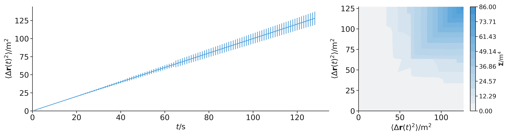
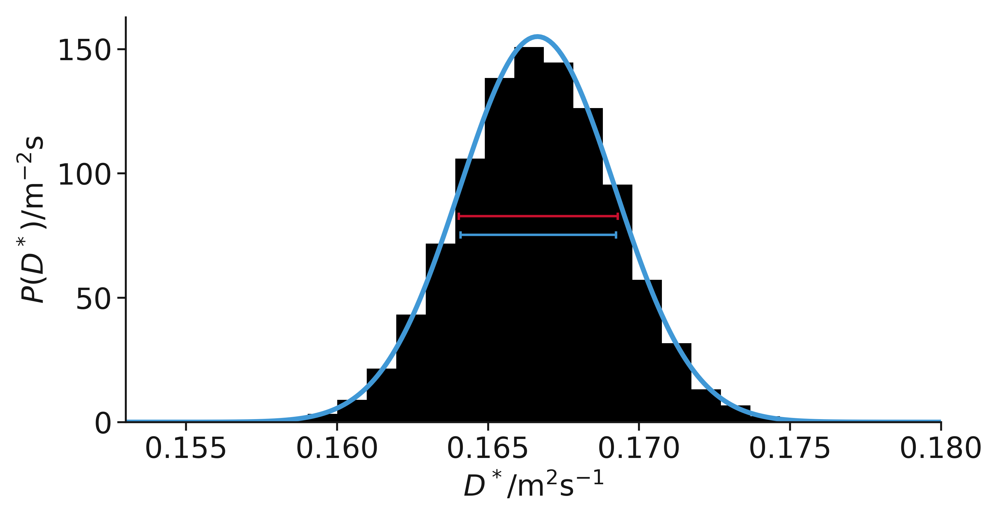
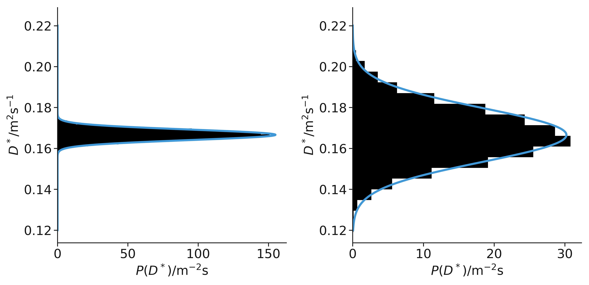

Diffusion problems or: How I Learned to Stop Worrying and Love Correlated Data
ISIS ML Discussion Group — 2023/02/02
Andrew McCluskey üè¥Û†ÅßۆŢۆÅ≥ۆţۆťۆÅø
Instrument Data Scientist - Reflectometry
andrew.mccluskey@ess.eu
mccluskey.scot
(he/him)
mccluskey.scot/presentations/isis_ml/
Acknowledgements
Ben Morgan & Sam Coles
University of Bath/Faraday Institute
Diffusion
How atoms and molecules move in materials is of fundamental interest.
We can study diffusion with molecular dynamics (MD) simulations.
A particle on a 2D random walk.
Diffusion quantification
In an MD simulation, we can sample the displacement of an atoms over some time interval, \(t\).
A particle on a 2D random walk,
with displacement vector
.
Self-diffusion coefficient
Quantified the diffusion → linked to conductivity.
Found by
fitting a straight line
.
\[ \big\langle \Delta \mathbf{r} (t) ^2 \big\rangle = 2dD^*t + c \]
Mean-squared displacement as a function of time interval.
Self-diffusion coefficient
Quantified the diffusion → linked to conductivity.
Found by
fitting a straight line
.
\[ \big\langle \Delta \mathbf{r} (t) ^2 \big\rangle = 2dD^*t + c \]

Mean-squared displacement as a function of time interval,
with a line of best fit
.
Stochastic simulations
MD simulations are stochastic.
There are many possible mean-squared displacements that might be observed.

Examples of different random walks,
each with a different line of best fit
.
Stochastic simulations
MD simulations are stochastic.
There are many possible
diffusion coefficients
that might be observed.

The distribution of possible \(D^*\) values.
Uncertainty underestimation
Fitting a straight line
underestimates the true uncertainty.

The distribution of possible \(D^*\) values
with the estimated uncertainty from a single straight line
.
Displacements are not
iid
Independent: the displacement is correlated.
Identically distributed: the variance increases with \(t\).

Mean-squared displacement, with error bars (left) as a function of time interval and covariance matrix (right).
Account for these aspects
We can use:
Generalised least squares (limited to linear problems),
Probabilistic sampling with a covariant multivariate normal distribution.

The distribution of possible \(D^*\) values
with the GLS estimated uncertainty from a single straight line
.
Accurate uncertainty & high efficiency
When considering the non-iid nature, there is a significant improvement in statistical efficiency.

Comparison of results from GLS (left) and OLS (right)
kinisi.rtfd.io
Questions?
Tak for at lytte
Discussion
Considering an experimental/simulation technique that you work with regularly:
Are you worried about correlation in fitting?
Should you be?
How would you go about determining correlation
between data for your technique?